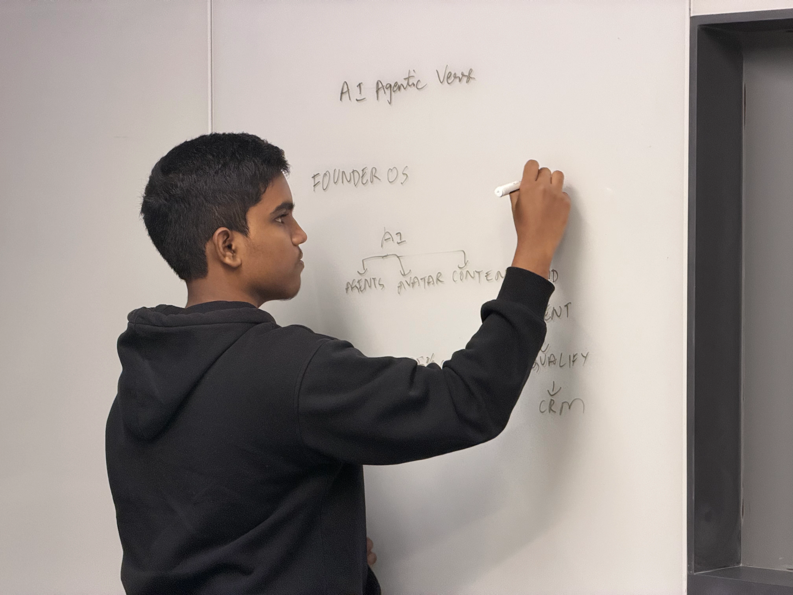

About the work
Building AI systems that make daily operations lighter.

I'm Yahgenesh, founder of AiAgentic Verse. We build autonomous growth systems for CEOs and founders who want maximum visibility without the operational drain.
At 17, I run a six-figure remote agency focused on custom AI agents, outbound systems and founder-led content engines. I have also worked with 15+ D2C brands across automation, commercials and growth systems.
The next generation of industry-defining companies won't spend 20 hours a week editing videos or writing cold emails by hand. They'll deploy AI agents that do it for them, around the clock.
What we build
Outbound & Lead Automation
AI agents powered by Grok and Hermes that find, qualify and book prospects straight into your calendar.
Founder Content & Video Systems
Premium video content that keeps founders visible on social media every week, with as little time on camera as they want.
Inbound Pipeline Architecture
We turn social media profiles into a 24/7 digital storefront that attracts and converts the right clients.
What clients get
- 15+ hours saved every week
- Zero manual prospecting
- A pipeline that runs while they sleep
Beyond the agency
Outside of agency operations, I'm deeply curious about the intersection of AI, data and Web3/blockchain infrastructure.